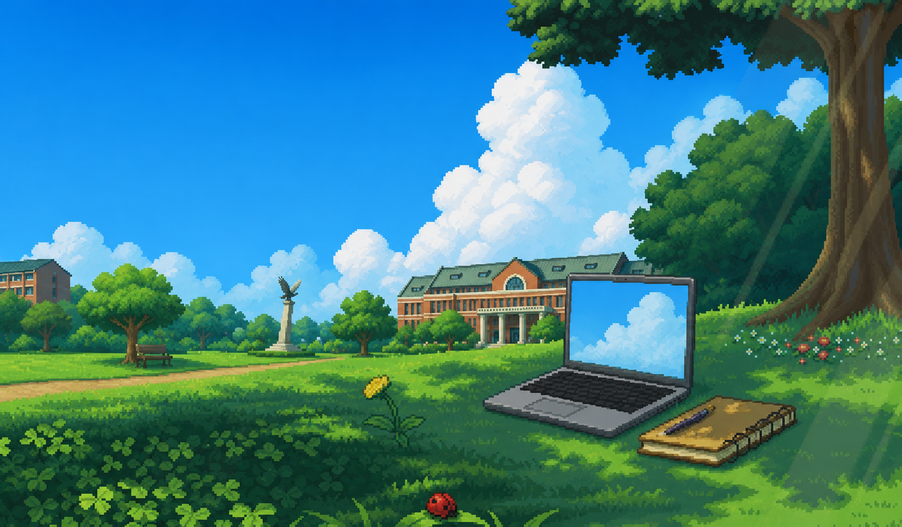
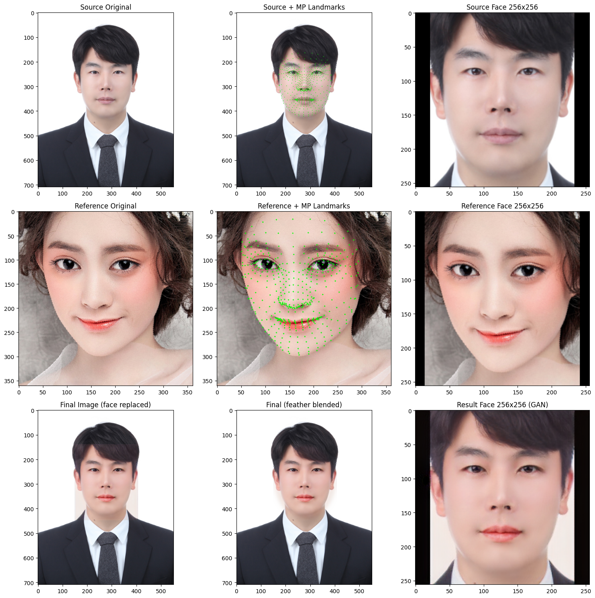
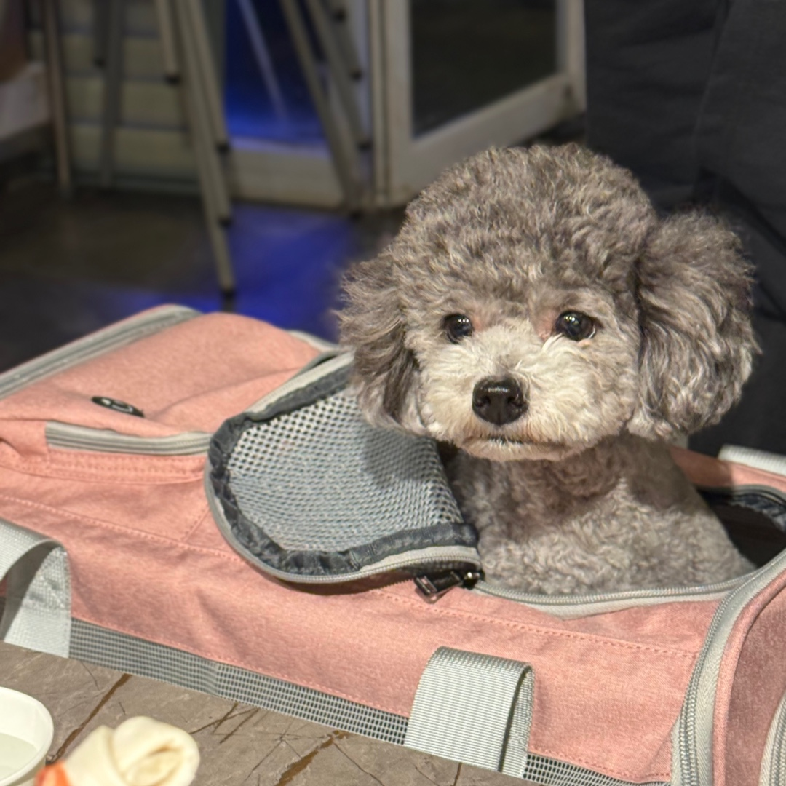

Multimodal Sensor AI
Learning robust representations from radar, camera, IMU, Wi-Fi CSI, and heterogeneous IoT signals.

Yonsei University · Mirae Campus
AI and Sensors Laboratory
We connect artificial intelligence with radar, vision, wireless, and IoT sensors to understand people and environments.
01 · About
AIS Lab develops AI-driven signal processing techniques for radar, vision, IMU, and IoT sensor systems.
Our research focuses on multimodal sensor fusion, lightweight AI models, indoor positioning, biosignal analysis, and intelligent sensing systems. By combining artificial intelligence with diverse sensing technologies, we develop practical solutions for real-world environments and next-generation intelligent applications.
02 · Research
From raw sensor measurements to meaningful intelligence.
Learning robust representations from radar, camera, IMU, Wi-Fi CSI, and heterogeneous IoT signals.
Contactless pose estimation, activity recognition, behavioral understanding, and digital healthcare.
Indoor positioning, autonomous perception, 3D mapping, Gaussian Splatting, and neural digital twins.
Memory-efficient inference, edge intelligence, model optimization, and sustainable AI infrastructure.
03 · Principal Investigator
Assistant Professor · Department of Software
Yonsei University, Mirae Campus
윤영욱, 소프트웨어학부 · 조교수
연세대학교 미래캠퍼스
His research focuses on artificial intelligence for sensor signal processing, multimodal perception, radar and wireless sensing, human motion analysis, and efficient AI systems.
04 · Publications
05 · People
Researchers learning, building, and growing together.
Principal Investigator
AI · Sensors Signal Processing
Open position
MS / PhD applicants welcome
Open position
Research internship / capstone06 · News
AIS Lab website opened. Welcome to our new online home.
Joined the Department of Software at Yonsei University Mirae Campus as an Assistant Professor. print( * hello world.)
07 · Teaching
Undergraduate and graduate courses taught at Yonsei University Mirae Campus.
(The following courses are listed in alphabetical order.)
08 · Contact
Students interested in AI, signal processing, sensors, human motion analysis, or AI systems are encouraged to contact us.
yu_yun@yonsei.ac.krAIS Lab
Artificial Intelligence & Sensor Laboratory
Department of Software
Yonsei University, Mirae Campus
1 Yonseidae-gil, Wonju-si,
Gangwon-do, Republic of Korea
Mirae Building
514